3D-Printed 3-Way Speaker System
A fully active stereo speaker system built from scratch in a London flat — 3D printed, plaster-loaded cabinets driven by DSP amplifier boards.
After finishing the Nixie speaker project I wanted something with more low-end output — but it had to be manufacturable in a small London flat with minimal tools. The constraint shaped everything: no CNC, no large workshop, just a desktop 3D printer and whatever could be sourced or improvised.
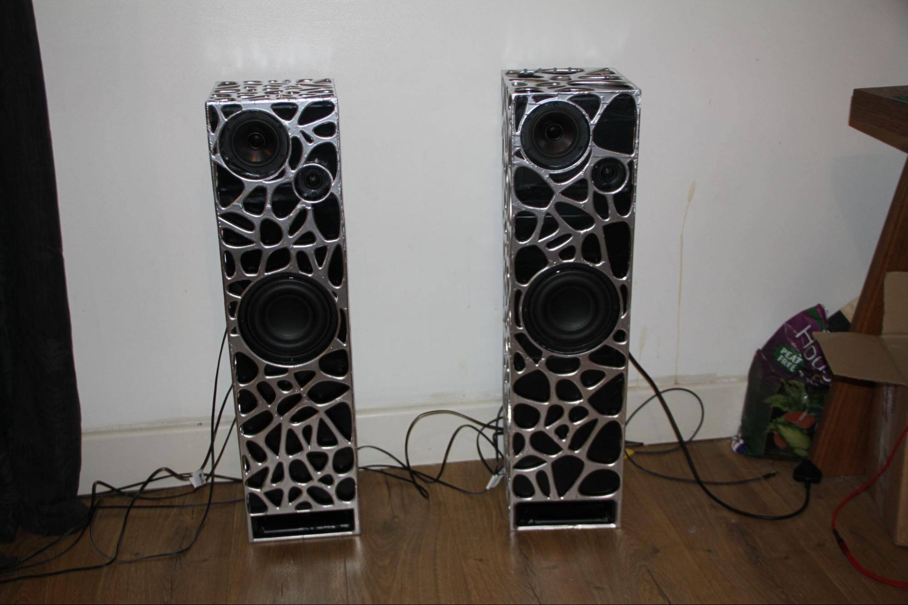
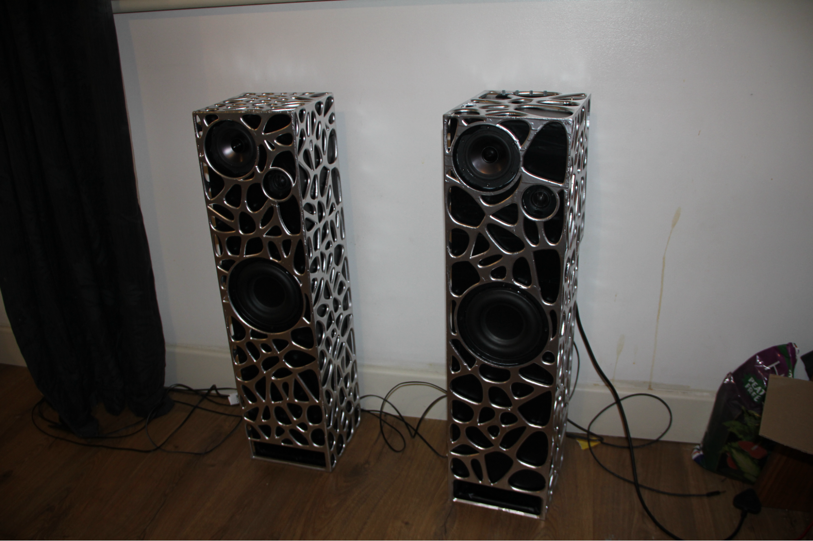
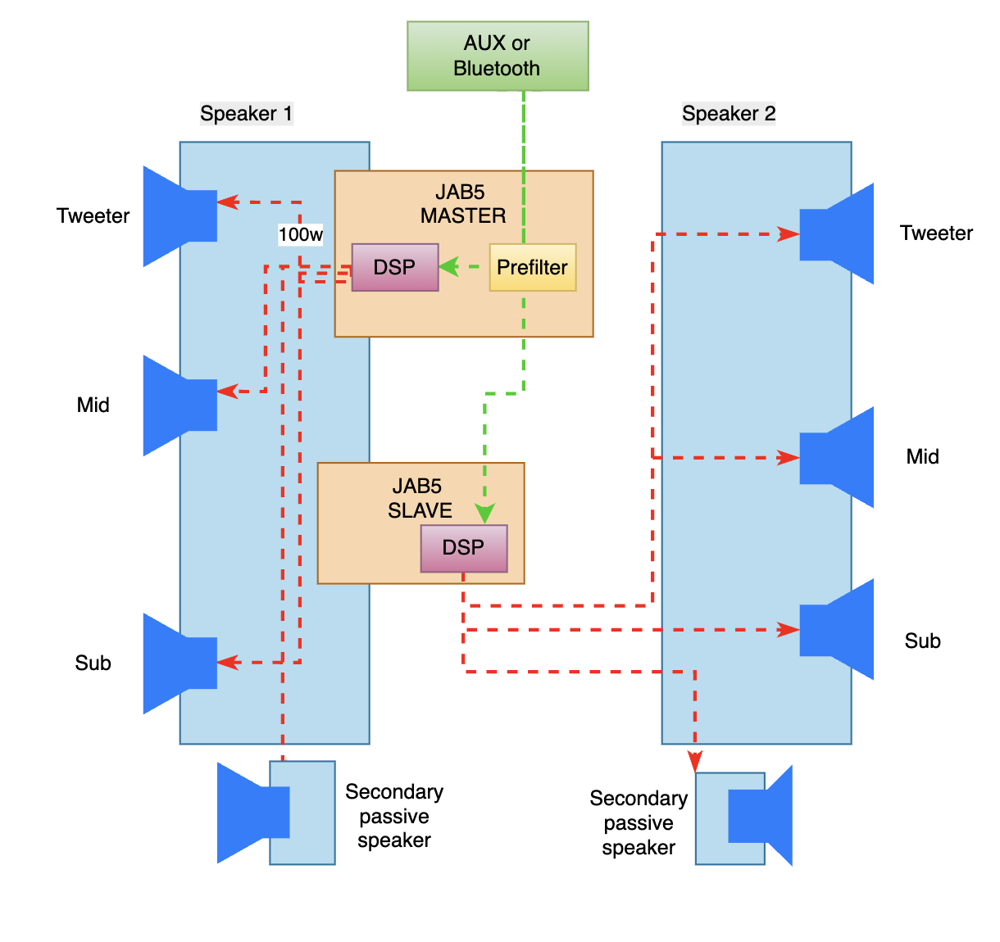
JAB5 cascade schematic — both amplifier boards on one speaker, speaker-level cables to the other.
Concept
I started with a few rough concepts. The first was an omnidirectional design — interesting acoustically, but ruled out immediately: omnidirectional speakers are great, unless you put them up against a wall, which is generally the best place to put a speaker.
The second concept was more promising: a 3-way design with a 3D-printed shell that could be infilled with plaster of paris for mass loading, with a bent bass reflex port for low-end extension and wire channels routed through the structure. This was interesting enough to prototype.
View concept sketches


V1 — First prototype
The manufacturing approach was simple in principle: 3D print a set of interlocking shells, bond them together, and fill with a gypsum and PVA mixture for mass loading. The electronics choice was the JAB5 amplifier board — integrated DSP, signal processing, 4×100W channels, Bluetooth, and daisy-chainable for an 8×100W cascade system.
Filling with liquid plaster from the top turned out to be a much bigger challenge than anticipated. Getting the viscosity right is a non-trivial problem: too thin and it leaks through every gap; too thick and it blocks the flow channels. Gypsum also thickens during pouring, making the whole process a nonlinear nightmare. The leak was noticed early — it got considerably worse as the reservoir of plaster gradually found every exit.
View V1 photos — the leak and the build
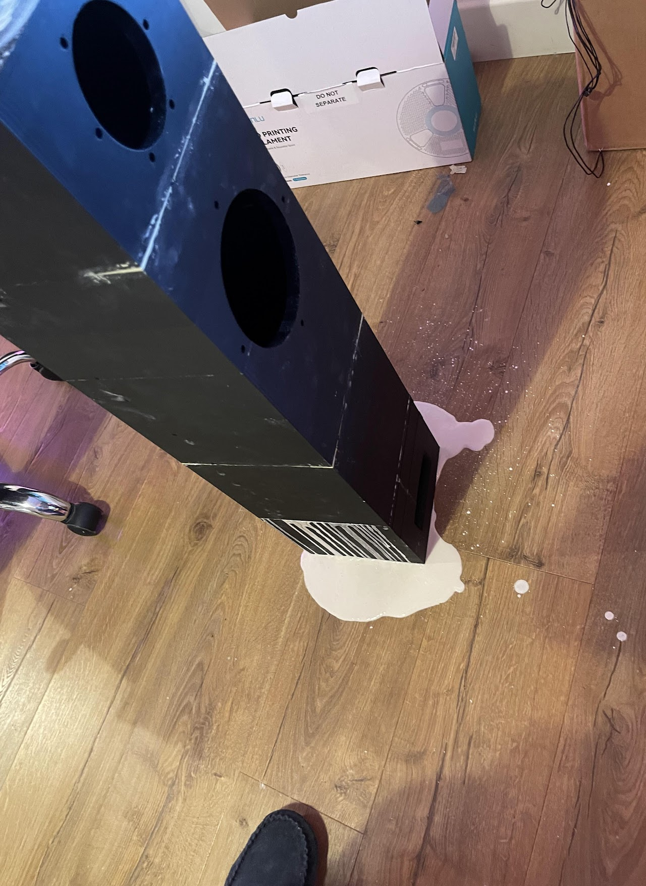


V2 — Redesign
V1 taught several clear lessons. The continuous-wall design meant that a single leak could compromise the whole build, and the interconnected fill channels made viscosity management extremely difficult. The screw-free assembly using epoxy was expensive and not very effective.
V2 addressed all of this. Shells became modular — each infilled individually before assembly, so a failed pour means replacing one shell rather than starting over. Height was reduced by incorporating the bass reflex port as one of the structural walls. Angled screw mounts replaced epoxy, providing proper clamping force between pieces.


View all V2 CAD images


Wall construction
Each wall is a multilayer composite. From inside to outside: acoustic foam liner, 3D-printed shell, gypsum/PVA infill, vinyl wrap as the outer airtight envelope.
Stixall handles air sealing, adhesion, and gap filling between shells. The vinyl wrap is the primary airtight barrier and also adds a tensioned outer face that stiffens the whole assembly. Screws ensure rigidity during cure and prevent shells separating when the speaker is handled — a failure mode observed with V1, where the gypsum (unsurprisingly) had no tensile strength.
View wall construction schematic and build sequence

Section view of a single composite wall — inside (left) to outside (right).
Build sequence for each shell:
- Print shells
- Mix gypsum and PVA with water, pour into individual shell, allow to dry
- Bond infilled shells together with screws and Stixall sealing adhesive
- Stick acoustic foam liner to inside wall
- Vinyl wrap the outside — airtight envelope and structural tension layer
- Stuff with wool
- Exterior finishing to follow
Build
Vinyl wrapping provided an airtight seal and covered the rough plaster fills, though it was not intended as the final aesthetic — that comes later. Getting an even wrap on an irregular multi-part 3D-printed surface was genuinely difficult. The conclusion: a future career in vinyl wrapping is firmly off the table.


View all build photos


Electronics
Programming the JAB5 boards was done in Sigma Studio. Getting the PC to recognise the programming board required a few hours of troubleshooting — the board itself needed reprogramming first. Once connected, dialling in the DSP filters was straightforward and the system sounded good early on.
The original plan was a JAB5 board mounted to the back of each speaker, linked over I²S in master-slave configuration. The discovery that I²S cables max out at around 10cm was an unexpected blocker — not ideal for a stereo pair. The solution: mount both boards on one speaker and run speaker-level cables to the other, making it a passive satellite. Less elegant, but it works well and keeps the cascade system intact.


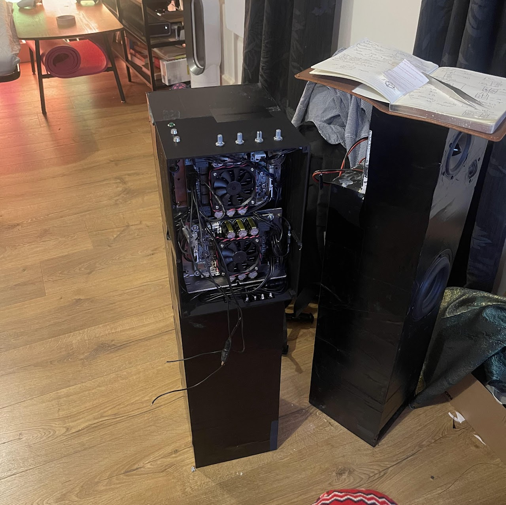
View all electronics photos and DSP programs


Aesthetics — concepts
With the system functional, attention turned to how the speakers should look in their final form. The vinyl-wrapped boxes were never going to be permanent. Using a reference photo of the two wrapped speakers, I used AI image generation to explore a range of finishing concepts — parametric 3D-printed panels, block patterns, and print-based surface treatments.


View all AI-generated finishing concepts

Reference image: the wrapped boxes before finishing.


Aesthetics — voronoi shell
After exploring AI-generated concepts, I settled on a voronoi pattern. A voronoi diagram partitions a plane into regions based on distance to a set of seed points — the result is an organic, cell-like tessellation that looks genuinely interesting without much effort on my part. I modelled the shell in Onshape using a dedicated voronoi FeatureScript plugin, then split it into segments small enough to fit on the Bambu A1 Mini's 180mm³ bed.
One detail that mattered structurally: all slicing planes between segments were angled to form chamfers rather than butt joints. When filling shells with plaster, the gypsum causes them to bulge slightly — chamfered edges give built-in compliance that can be filled and sanded flat, whereas a square butt joint just leaves a visible step.
View voronoi CAD models
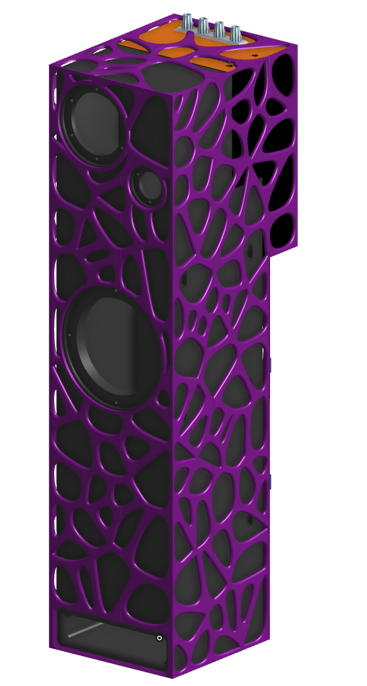
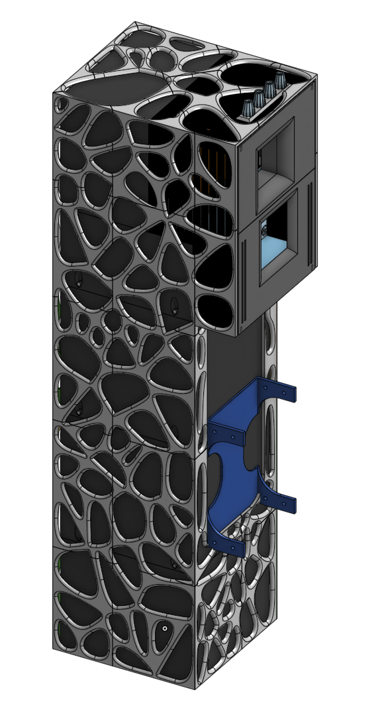
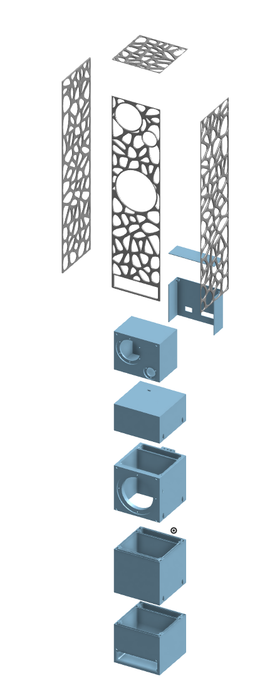
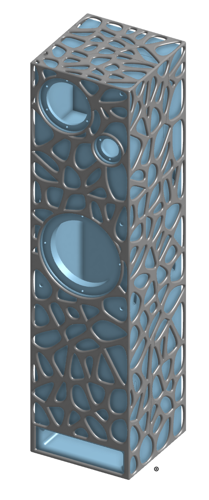
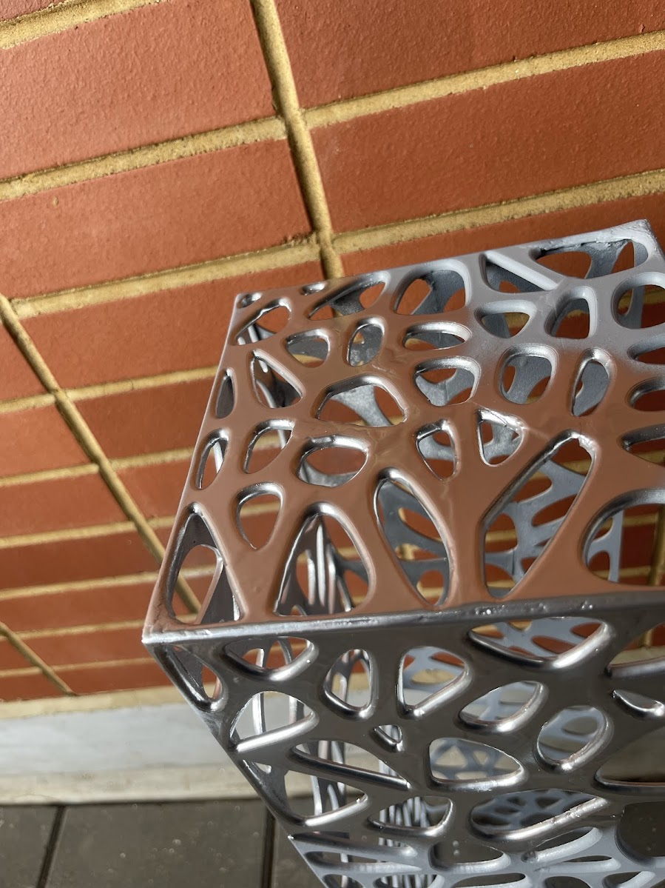
View chamfer joint detail
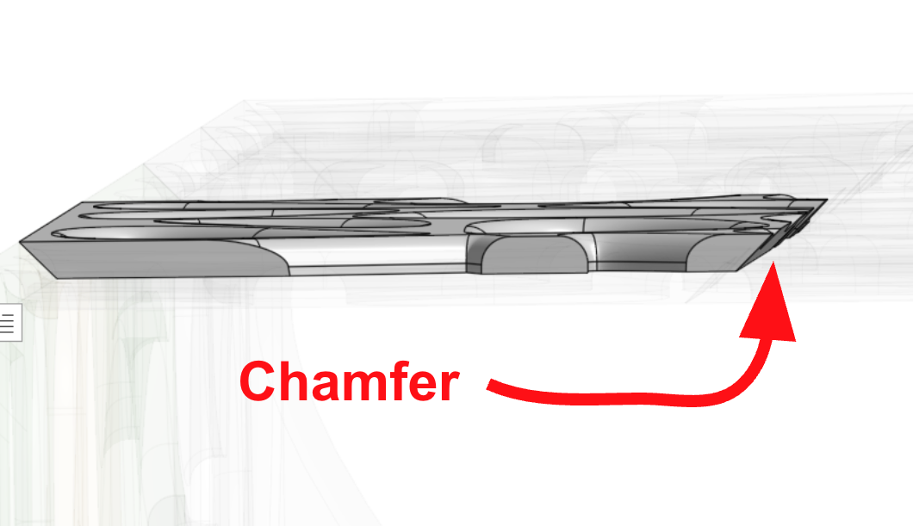
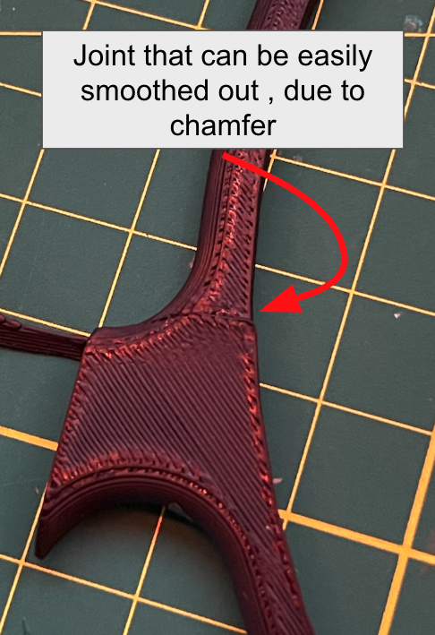
Building the voronoi shell
The segments were printed, bonded together, then filled and sanded across all the joints. Sanding many, many joints is about as enjoyable as it sounds. The priming and painting was done outside — spray painted in the road in front of the building, which was less ideal logistically but worked well enough.
I had to get this done quickly as we were about to move flat, which shows a bit in the result. The sanding was rushed and the print quality of the shells was pushed too fast. I'm not quite satisfied with the finish — the voronoi surface is rougher than it should be — and I may go back and give it several more coats of thick filler primer, sand it back properly, and repaint.
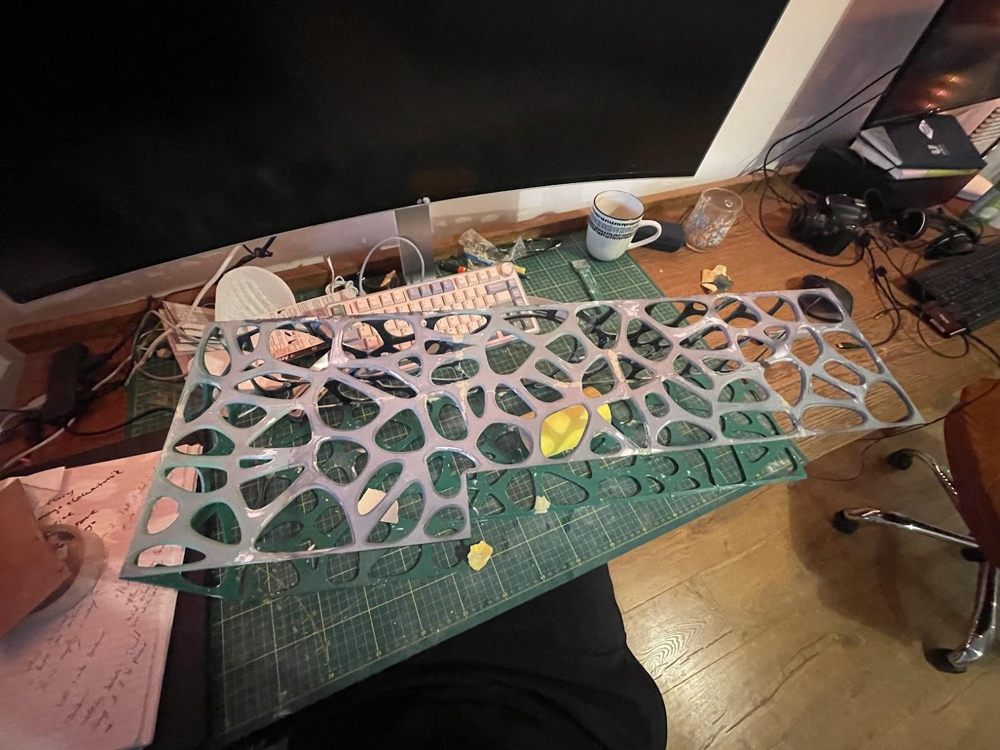
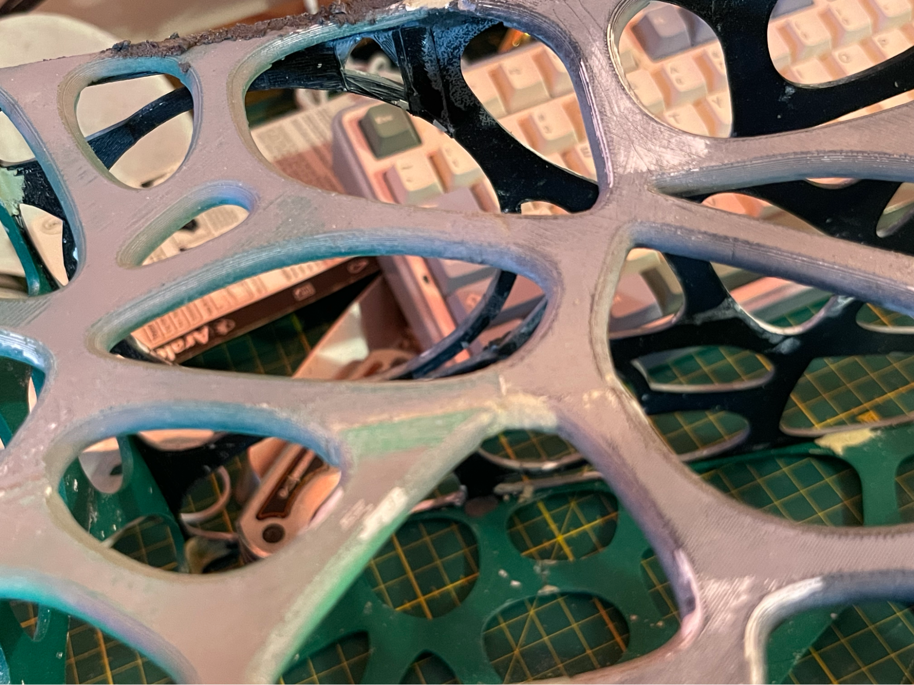
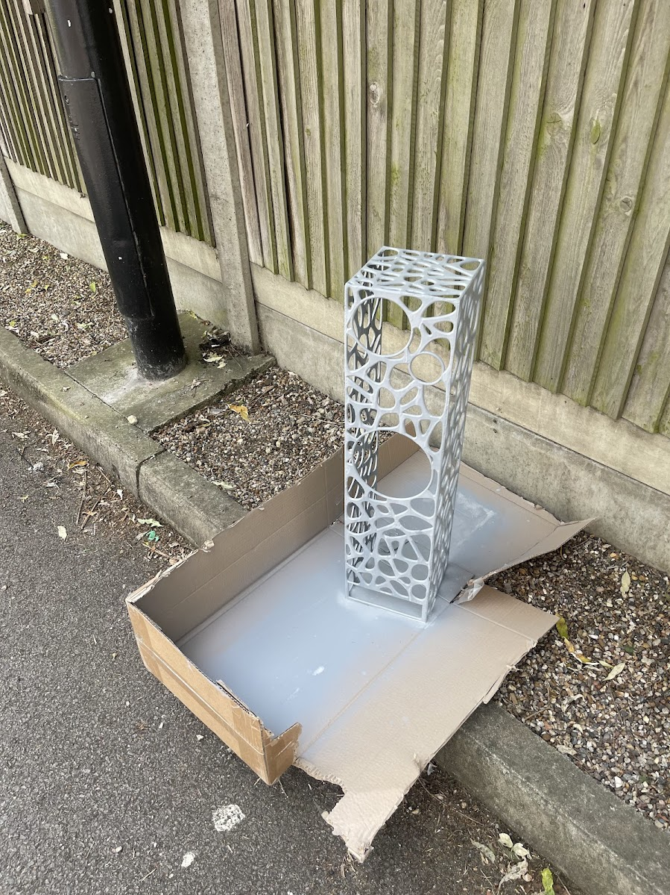
View all voronoi build photos
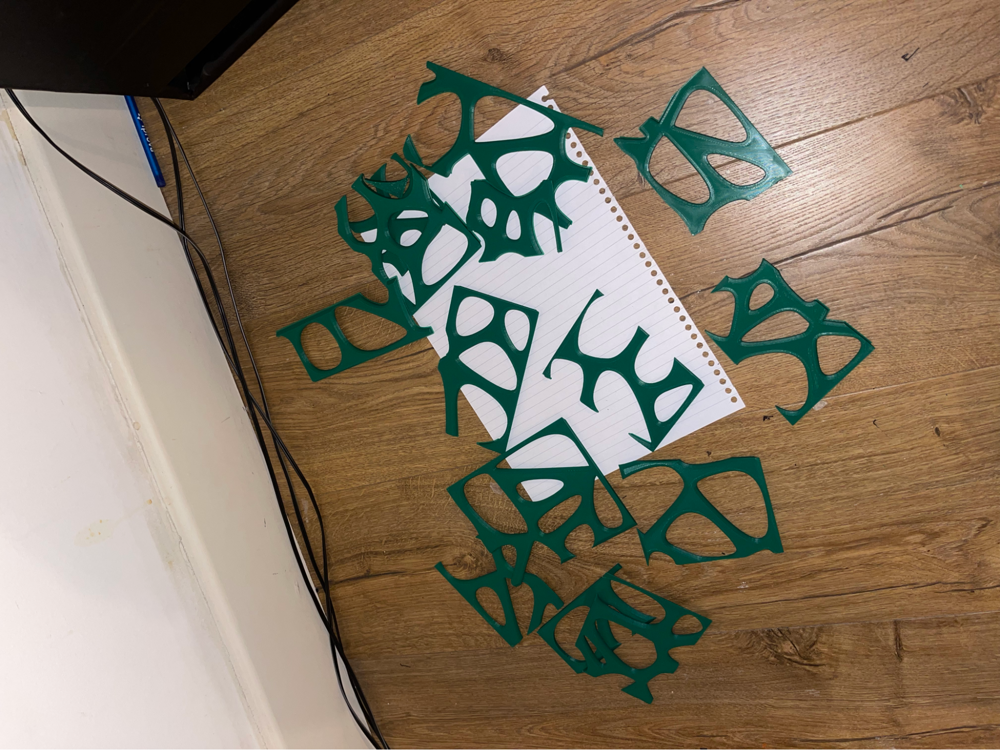
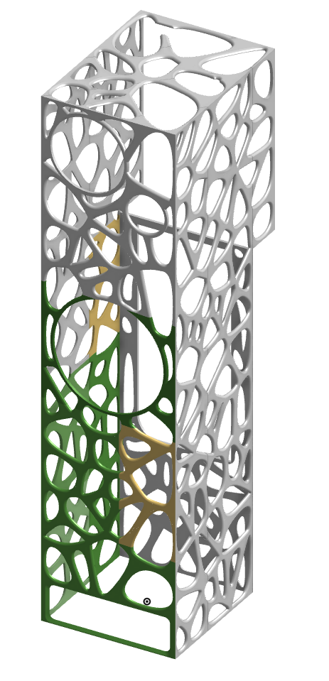
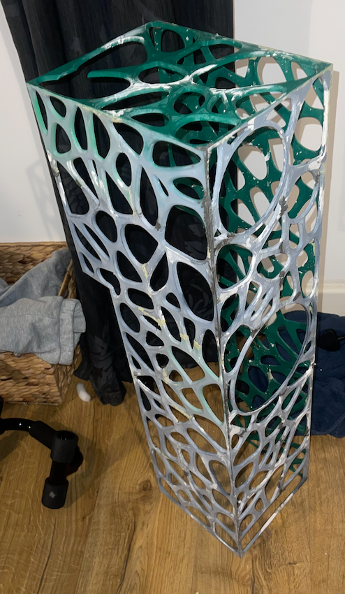
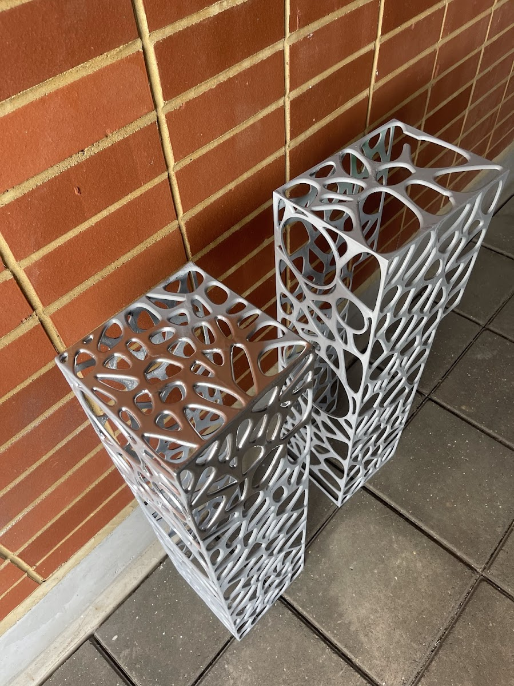
Finished speakers
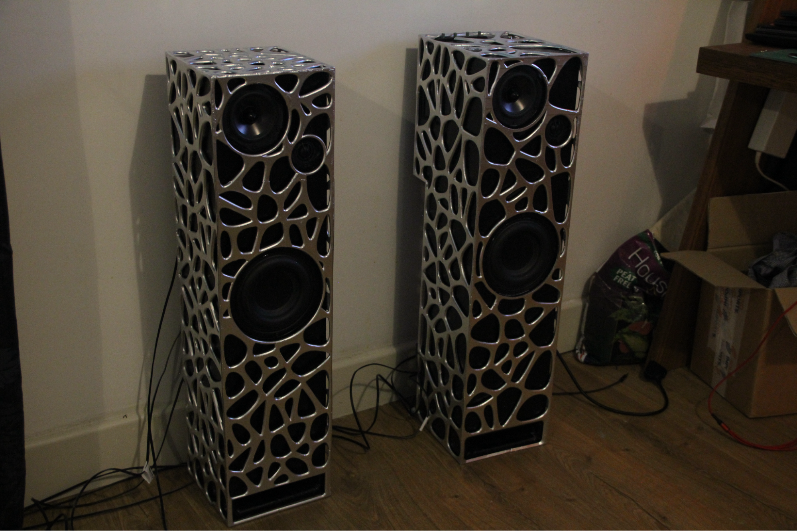
View all finished photos
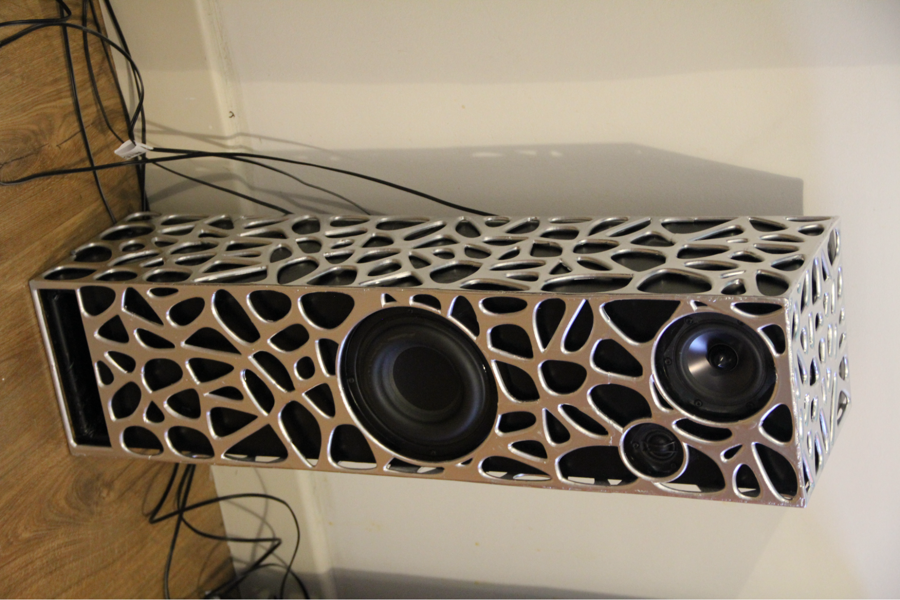
Current status
Both speakers are tuned and fully operational — two JAB5 boards running in master-slave cascade, 8×100W total, playing down to 40Hz. The voronoi exterior shell is on and painted. For a pair of 3D-printed boxes built in a London flat, the output is significant.
Things still on the list:
- Acoustic measurement and calibration (REW + calibrated measurement mic — sourcing in progress)
- Cable management
- Custom potentiometer knobs
- Possibly regrind the voronoi finish — a few more coats of filler primer, proper sanding, repaint